Jungle Freaks Motor Club $JUNGLE 代币是 Jungle Freaks 生态系统的代币。 它是丛林怪人社区中所有事物的生命之血。随着更多实用性和功能的推出，$JUNGLE 代币将成为交易和受益于新功能的中
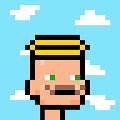 Junior Punks ▶ 什么是少年朋克？ Junior Punks 是一个 NFT（不可替代代币）集合。存储在区块链上的数字艺术品集合。 ▶ 有多少 Junior Punks 代币？ 总共有 5,555 个 Junior Punks NFT。目前，2,5
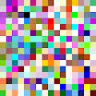 Just Backgrounds 收集 256 个稀有和独特的背景。将它们用作您的 Twitter 个人资料的背景，或用作您最喜爱的 PFP 收藏品的背景。可能性是无止境。高分辨率，无限可扩展。博物馆品质代
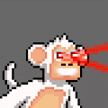 Just Chimps 内容：3,333 只像素黑猩猩生活在区块链上，探索丛林，四处游荡。它们是一种手绘的艺术品，只想与世界分开。 ▶ 什么是正义黑猩猩？ Just Chimps 是一个 NFT
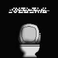 Just Shit! ▶ 什么是 Ape Just Shit？ Ape Just Shit 是一个 NFT（不可替代令牌）集合。存储在区块链上的数字艺术品集合。 ▶ 存在多少 Ape Just Shit 代币？ 总共有 1,088 个 Ape Just Shit NFT。
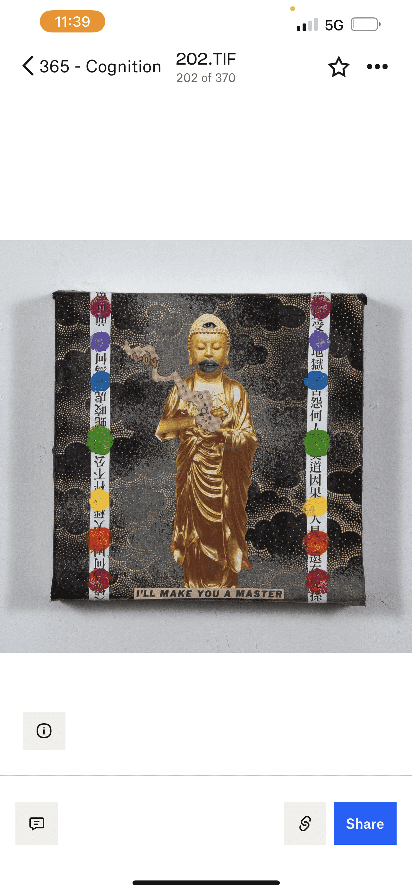 Justin Aversano - Cognition - Collection of 364 Paintings 纽约，纽约，2022 年 8 月 8 日）—— 曼哈顿上空的维纳斯很高兴地宣布贾斯汀·阿维萨诺：认知，这是与开拓性艺术家和摄影师前所未有的合作。Aver
Kaien Cruz ▶ 什么是凯恩克鲁兹？ Kaien Cruz 是一个 NFT（非同质代币）集合。存储在区块链上的数字艺术品集合。 ▶ 存在多少 Kaien Cruz 代币？ 总共有 25 个 Kaien Cruz NFT。目前，20
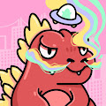 KaijuFrenz: Genesis ▶ 什么是 KaijuFrenz：创世纪？ KaijuFrenz：Genesis 是一个 NFT（Non-fungible token）集合。存储在区块
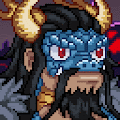 KaijuKongz 实时燃烧机制。在 opensea 上市的 Kaiju Kongz NFT 低于某个门槛价格将直接从您的钱包中自动销毁。阈值每 24 小时翻一番，持续 5 天。生成 $HUMAN 代币，这些代币可以与他们的创世
Kaizen Genesis Collection ▶ 什么是 Kaizen Genesis Collection？ Kaizen Genesis Collection 是一个 NFT（非同质代币）集合。存储在区块链上的数字艺术品集合。 ▶ 存在多少 Kaizen Genesis Collection 代币？ 总共有 2,056 个 Kaizen Genesis
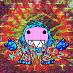 KAKA DEEZ NUTZ KAKAMORAS 偷走了 TE FITI 的心脏，现在在开阔的水域有 10,000 强！！！愚蠢的变异和混乱的混合在一起KAKA DEEZ NUTZ 新品来了！如果你喜欢你看到的加入我的旅程！ ▶ 什么是 KAKA
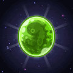 King of Planets Official King of Planets 是一款基于区块链的 P2E（Play-to-Earn）游戏，包含 NFT、DeFi 2.0 和 GameFi。它是在 Klaytn 网络上创建的，用户可以赚取和花
KODAPOTIONS Koda Potions 是 1,111 种魔法运气药水的集合，可以增加你在铸造 Yuga Labs 的“The Otherside Metaverse Land Deed”后获得 Koda 的运气（可能是 idk）。 不隶属于 Yuga Labs。
Kohi Kintsugi — 从日本 Kintsugi 艺术中汲取灵感，这个前卫系列颠覆了人们的期望，审视了自我与野心、完整性、力量和获取贵金属的虚假价值之间的关系。 Kintsugi 是我们的创世系列和
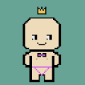 KOKO lost his weenie KOKO失去了他的小妞，加入 KOKO 的 Nakedverse，帮助他找回丢失的小宝贝！ 3,600 KOKO 已准备好参加派对！ KOKO 失去了他的 weenie 是一个 NFT（不可替代令牌
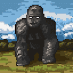 Kong Game Official Kong Game 是一款高赌注的混合链上游戏，设置在 Kong 居住了数千年的 Kong Island。最近，金刚面临迫在眉睫的威胁。Kaijus 入侵并开始大量繁殖。Kong
KONGz Polygon KONGz Polygon是一个 NFT（不可替代代币）集合。存储在区块链上的数字艺术品集合。 总共有 20,000 个 KONGz Polygon NFT。目前 5 位所有者的钱包中至少有一个 KONGz Polygon
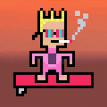 Kooks NFT 4,269 个 Pixel Art Surfer Kook PFP 的集合 我们已经准备好 Foamie Longboards 来接管您当地的冲浪休息时间！ 不要成为水中的怪人，成为区块链上的怪人！切碎！哇哇哇哇！！！！查看 KOOK LEGENDS 1/1 100
Kool Kevs 555 Kool Kevs 的官方 Koolworld Genesis 系列。艺术和社区驱动的通货紧缩 NFT 收藏。Kool Kevs 是一个 NFT（非同质代币）集合。存储在区块链上的数字艺术品集合。总共有 555 个 Kool
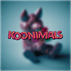 Koonimals Official Collection Koonimals 是以太坊区块链上 1060 个 NFT 的集合。由世界知名艺术家杰夫昆斯之子路德维希昆斯创作。收藏的目的是创建虚拟世界中最著名的博物馆之一。Koons 的目标
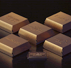 Korea Retro Burger Club Official 众所周知，韩国第一次知道汉堡是在朝鲜战争期间驻扎在韩国的美国士兵。商业汉堡店于 1970 年代首次出现在韩国，自 1980 年代以来，汉堡店的数量迅速增加，主要
Kosekai Collective Kosekai Collective 是一组手绘的奇幻冒险家，他们将踏上探索沉浸感、创造力和表达的旅程——从而实现个性化的成长。 JRPG、日本动漫和创新技术的巅峰之作激发了故
KRAFTERSPACE Krafterspace 是 Klaytn 网络的 NFT 平台。 使用 KrafterSpace 创建和管理您的 NFT 变得简单方便。Krafterspace NFT（非同质代币）集合。存储在区块链上的数字艺术品集合。过
Kraken Secret Society | KSS Kraken Secret Society 是一个社区品牌。参加堕落的海妖在拯救元宇宙的路上的冒险。我们正在构建一个社区 IP，用于开发视频游戏和漫画书。加入冒险 总共有 5,001 个 Kraken Secret Society |
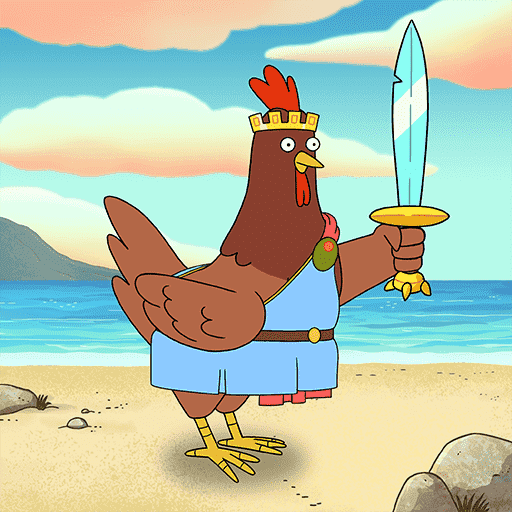 Krapopolis Krap Chickens 在公元前 600 年开发货币之前，古希腊人不得不使用易货系统。大多数以物易物的商品都是可食用的，但易腐烂。你可能不能吃这只鸡，但你可以用它来换取比一
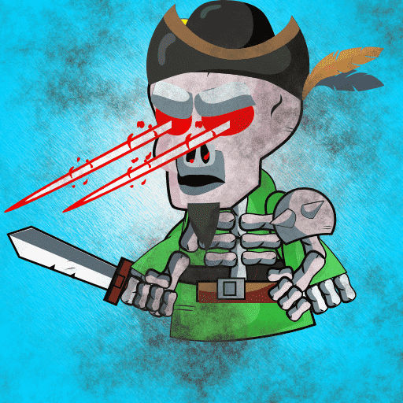 Krypto-Skelett 我们的 Crypto 骨架是独一无二的，来自 10000 件收藏品。每张图片都是单独上传的，一个接一个。在一个新的世界里——以一种新的方式在艺术上发泄情绪。Krypt
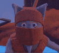 KRYPTOBITZ set002 由左下角的 CONTENT ID 保证唯一，1 of 1。这是 set002，所有 cardz 在所有其他系列中都是独一无二的。铸造于 2021 年 - 这是罕见的 spazeFalcon 艺术品。它是在粉丝最喜欢的数
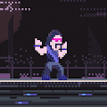 KryptoChurch Apostles KryptoChurch 正在更上一层楼。区块链之子GZY选使徒，挂抽奖。通过 Discord bot 从 1000 名门徒中仅选出 12 名使徒。KryptoChurch Apostles 是一个 NFT（不可替代令牌）
Kuddle Koalas Kuddle Koalas 是生活在以太坊区块链上的 7500 个独特 NFT 的集合。超过 200 个由稀有度随机化的特征 。Kuddle Koalas 是一个 NFT 集合，可以使有需要的儿童受益。超过 25% 的销售
KumaBossNFT 熊老板由 BossLabs 创建的 5,555 个 Kuma Boss 合集，带出你内心深处的 Boss，并在 web3 中建立遗产。加入并与您的家人一起战斗！觉醒的熊老板揭幕前10分钟！觉醒的 Kuma Boss 的
Kumaverse Genesis Kuma Genesis 是来自另一个星球的 2,000 只智能熊类生物的第一个生成集合。他们现在分散在世界各地，在 Kumaverse 内穿越和探索，可以访问： 横幅定制工具 - TrippyNod
Kumite - Genesis Collection 现在是 2050 年，一场英雄与反派之间的史诗般的战斗正在酝酿之中。这些来自天使、地精、机器人、忍者、蒸汽朋克、超级英雄、仙灵、怪物等 24 个不同家族的高
KUMORSIO_klay KUMORSIO 是 137 只独特的卡哇伊宠物的集合，每只都是手动制作并通过 AI 迭代。它们都是独一无二的。KUMORSIO 是一个 NFT（不可替代令牌）集合。存储在区
Kureiji NFT Official 欢迎来到 Kureiji NFT 官方合集，我们的 5,555 名操作员将齐聚一堂！我们一直在忙于准备并试图为 KUREIJI FAMILY 带来更多的关注！今天。我已经看到其他人分享了他们的包，仍然，